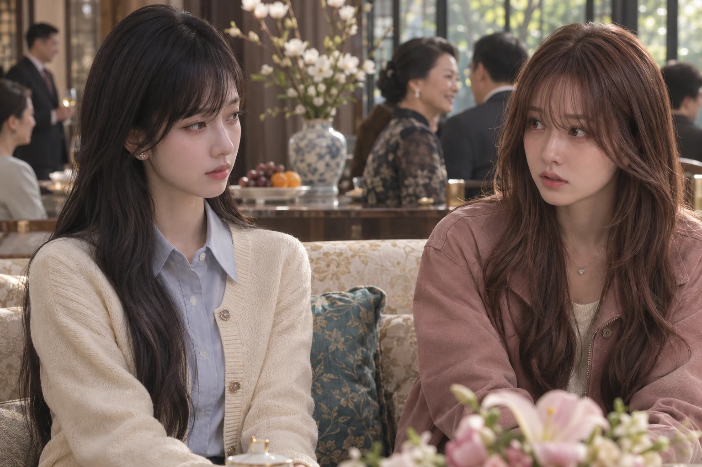
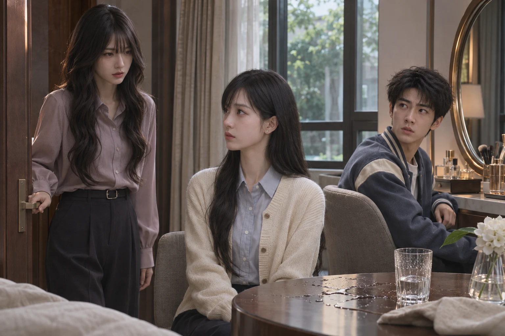

ตอนที่ 17
เหยื่อรายต่อไปเคี้ยวยาก
เฉียวอันฉีงุนงงกับความเปลี่ยนแปลงของอีกฝ่าย เดิมทีซ่งอวิ๋นไม่ใช่คนมีความอดทนสูงอะไร ยิ่งเป็นเรื่องที่กระทบจิตใจ เธอสามารถทำให้ศัตรูเจ็บแสบถึงแก่น แต่ตอนนี้กลับวางตัวประหนึ่งพระโพธิสัตว์
“ทำไมมองฉันแปลก ๆ” ซ่งอวิ๋นเอียงคอพลางกะพริบตาปริบ ๆ อย่างไร้เดียงสา
“เปล่า ไม่มีอะไร ฉันแค่สงสัยนิดหน่อย” นัยน์ตากลมโตฉายแววฉงนสนเท่ห์
“หืม สงสัยเรื่องอะไร?”
“ฉันรู้สึกว่าเธอเปลี่ยนไปตั้งแต่เมื่อกี้แล้ว เหมือนกลายเป็นใครที่ฉันไม่รู้จัก ถ้าเป็นเมื่อก่อนเธอไม่มีทางอดทนให้ซ่งหว่านลอยหน้าลอยตาแน่ แต่ตอนนี้เธอกลับ..”
“คนเราต้องเติบโตในทางที่ดีขึ้นนะฉีฉี เธอคิดดูสิ ถ้าวันเกิดฉันโวยวายอาละวาดเหมือนคนเสียสติ เรื่องราวจะเลยเถิดไปขนาดไหน คุณปู่เองก็แก่แล้ว ฉันทำตัวไร้สติด้วยอีกคน ท่านได้ล้มป่วยกันพอดี”
“...” เฉียวอันฉีจ้องซ่งอวิ๋นตาค้างประหนึ่งเห็นผี ในดวงตาใสกระจ่างมีความรู้สึกอื่นเจือปนครั้งแรก แม้ซ่งอวิ๋นจะมองไม่ออกว่าความรู้สึกนั้นคืออะไร แต่เธอสัมผัสได้เลยว่ามันไม่ดีนัก

“อีกอย่าง.. แม่ของฉันสภาพจิตใจอ่อนแอมาก ๆ ถึงจะเห็นท่านยิ้มแย้ม แต่บางครั้งท่านก็ยังแอบร้องไห้อยู่เลย จะให้สร้างปัญหาเพิ่ม ฉันก็ทำไม่ลงแล้ว”
ไม่เลย ถ้าหากเธอไม่ฝัน และไม่ได้รับคำเตือนจากคุณย่า เธอคงอาละวาดและทำให้มันเป็นเรื่องใหญ่โต
“ให้ตายเถอะ ตกใจหมดเลย เหมือนได้เพื่อนใหม่” เฉียวอันฉีหลุบตาลง ปกปิดความรู้สึกในดวงตา พลางลูบอกตนเองเบา ๆ
“ฉันเป็นแบบนี้ไม่ดีเหรอ” ซ่งอวิ๋นยิ้มหัว แต่จับสังเกตปฏิกิริยาของเพื่อนสนิทจนมั่นใจแล้วว่า ที่ผ่านมาเธอจริงใจอยู่ฝ่ายเดียว
และบางครั้งคนที่เรารักและเชื่อใจที่สุด อาจเป็นคนทำร้ายเราได้อย่างสาหัสที่สุด ดูพ่อของเธอนั่นอย่างไรเล่า
“ไม่ใช่แบบนั้นหรอก แต่ดีเกินไปฉันตั้งตัวไม่ทัน” เฉียวอันฉียิ้มแหย พลางส่ายศีรษะรัว ๆ
“เปลี่ยนเรื่องคุยกันดีกว่า สรุปแล้วเธอจะเรียนที่ไหน เป่ยจิงหรือชิงหวา” ซ่งอวิ๋นเบี่ยงประเด็น อีกฝ่ายเป็นงูพิษ แต่เธอจะยังไม่ตัดสัมพันธ์ทันที เพราะลางสังหรณ์บอกเธอว่าห้ามใจร้อนในตอนนี้
“ตอนแรกก็จะเข้าเป่ยจิง แต่เธออยากเรียนชิงหวานี่นา ฉันไม่อยากแยกกับเธอ”
“ไม่เห็นเป็นไรเลย พวกเราแยกกันเรียน จะได้เจอเพื่อนใหม่ ๆ ได้ทำความรู้จักกับเด็กหัวกะทิจากทั้งสองมหาลัย เธอเคยบอกว่าอยากทำธุรกิจร่วมกับฉันไม่ใช่เหรอ”
“นั่นก็จริง แต่ชีวิตนี้ฉันแยกจากเธอไม่ได้แน่ ๆ แค่คิดก็เศร้าแล้วเนี่ย” เฉียวอันฉีทำปากยื่น ดูแล้วทั้งน่ารักและขี้อ้อนในเวลาเดียวกัน
ไม่น่าเชื่อว่าเพื่อนที่ร่าเริงสดใสขนาดนี้ ยามกล่าววาจาดูถูกก็เจ็บแสบไปถึงแกนสมอง
“งั้นเรียนชิงหวาด้วยกันนะ ฉันจะเรียนสาขาบริหารธุรกิจ แล้วเธอล่ะจะเรียนสาขาอะไร”
“พ่อแนะนำให้เรียนสาขาการตลาด ฉันเห็นด้วยนะ”
“อื้ม สาขาการตลาดก็เหมาะกับเธอดี”
สองสาวพูดคุยกันอยู่นานสองนาน ตลอดเวลาซ่งอวิ๋นรู้สึกได้ว่าเพื่อนสนิทคนนี้มักวนกลับไปพูดเรื่องซ่งหว่านหลายครั้ง ทุกอย่างดูเป็นธรรมชาติ หากไม่สังเกตก็มองไม่ออก
หญิงสาวไม่แสดงท่าทีใด ๆ มากนัก ตอบเลี่ยง ๆ และเบี่ยงประเด็นได้เสมอ
...
ตั้งแต่ซ่งเหวินพาลูกสาวไปหามารดาและถูกท่านเพิกเฉย เขาก็กลับมาตั้งหลัก และยังไม่ได้ทำอะไรมากกว่านั้น ด้วยรู้ว่ามารดาอาจจะกำลังตกใจ จึงต้องการเวลาใคร่ครวญ ส่วนเรื่องที่ท่านสงสัยในสายเลือดของอาหว่าน เขาสามารถใช้ผลตรวจดีเอ็นเอในมือเป็นข้อพิสูจน์ได้เสมอ
ซ่งหว่านใช้เวลาก่อนเปิดเทอม เริ่มเดินเกมตามแผนที่วางไว้ ตอนนี้เธอมีซ่งเหวินและเจียงเซินเป็นพวกแล้ว เป้าหมายต่อไปของเธอคือซ่งจื้อ ด้วยรู้ว่าเขายังเด็ก หัวอ่อนและบางครั้งอาจไตร่ตรองสถานการณ์ไม่รอบคอบ เลยสร้างโอกาสให้ตัวเองได้อยู่ใกล้น้องชาย
ผ่านมาเดือนกว่า ๆ ก็ยังไม่เคยสำเร็จ เพราะจังหวะและโอกาสไม่ตรงกัน ถึงอย่างนั้นหญิงสาวยังไม่ย่อท้อ วันนี้เธอจึงมาเป็นทีมงานในกองถ่ายโฆษณาของซ่งจื้อ ทว่าดันมีสิ่งที่ไม่คาดคิดเกิดขึ้นเช่นกัน
“พี่สาม.. ร้อนหรือเปล่าครับ” ซ่งจื้อถามพี่สาวด้วยรอยยิ้มสดใส เขาดีใจที่สามารถลากพี่สาวออกจากบ้านได้
หลังจากสอบเกาเข่า เวลาผ่านมาเดือนกว่าแล้ว แต่พี่สาวของเขามัวแต่จมจ่อมอยู่กับการถ่ายรูป และอ่านหนังสือ ไม่ยอมออกไปเที่ยวเล่นที่ไหนเลย เขาจึงถือโอกาสดึงพี่สาวมากองถ่ายด้วยเสียเลย
“วันนี้ไม่ค่อยร้อนเท่าไหร่ นายต้องถ่ายโฆษณากลางแจ้งตลอดเลยเหรอ อดทนเก่งดีจังเลย” ซ่งอวิ๋นกวาดตาออกไปนอกหน้าต่างห้องแต่งตัว ตอนนี้แดดเริ่มแรงแล้ว ระหว่างถ่ายทำเขาต้องร้อนมากแน่ ๆ
“เปล่าหรอกครับพี่สาม ปกติจะถ่ายกันในสตูดิโอ แต่สินค้าตัวนี้ เจ้าของแบรนด์ต้องการให้ใช้สถานที่จริง เขาว่าอยากได้อะไรเรียล ๆ น่ะครับ”
“อ๋อ แบบนี้เอง” ซ่งอวิ๋นพยักหน้าเชิงรับรู้ ภายใต้ใบหน้ายิ้มแย้มเธอมีความตื่นเต้นแฝงอยู่เล็กน้อย
อันที่จริง สาเหตุที่เธอยอมออกกองกับน้องชาย ทั้งที่ปกติอยู่ติดบ้าน เป็นเพราะมันคือสิ่งที่เธอชอบ เธอเคยอยากเป็นช่างภาพ อยากเป็นผู้กำกับในกองถ่าย การได้มาสัมผัสบรรยากาศจริง คล้ายเปิดประสบการณ์ใหม่ให้เธอ
“ยีนสกุลซ่งดีเกินไปแล้ว หน้าตาดีกันทั้งพี่ทั้งน้องเลย น้องซ่งอวิ๋นไม่สนใจเป็นนักแสดงบ้างเหรอคะ” ช่างทำผมฝีมือดีพูดขึ้นหลังได้ยินสองพี่น้องคุยกัน
“ไม่ไหวหรอกค่ะ แค่นึกภาพตัวเองยืนหน้ากล้องก็ตลกแล้ว ตัวฉันต้องแข็งเป็นหินแน่ ๆ” ซ่งอวิ๋นโบกมือปฏิเสธพัลวัน
“ดีแล้วครับ พี่รองไม่เข้าวงการก็ดีแล้ว ผมหวง” ซ่งจื้อหันมากอดแขนพี่สาว ยืนยันว่าเขาหวงแหนพี่สาวมากจริง ๆ
“แหม ที่เคยบอกว่าพี่สาวสวยมาก แต่ไม่ยอมเปิดรูปให้พวกพี่ดูเพราะหวงจนอยากเก็บไว้คนเดียวสินะคะ”
“แน่นอนครับ ถ้าพี่สาวผมดังแล้วมีหนุ่ม ๆ มาจีบทำไง ผมยังไม่อยากมีพี่เขยตอนนี้หรอกนะ” ซ่งจื้อเชิดหน้าขึ้นเล็กน้อย หากพี่สาวจะมีแฟนตอนนี้ เขาเป็นคนแรกที่จะค้านแบบหัวชนฝา
“พี่ยังไม่คิดถึงเรื่องพวกนั้นหรอกน่า” ซ่งอวิ๋นส่ายศีรษะอย่างอ่อนอกอ่อนใจ
ตั้งแต่เด็ก เธอตั้งใจไว้แล้วว่าอยากจะขึ้นเป็นประธานซ่งกรุ๊ป และอยากเป็นหัวหน้าตระกูลซ่ง ความชอบเกี่ยวกับการถ่ายภาพจึงเป็นเพียงงานอดิเรก และการที่เธอจะเป็นหัวหน้าตระกูลได้ ฝ่ายชายต้องแต่งเข้าบ้านซ่ง เธอไม่คิดว่ามันไม่ง่ายเลย
แม้อายุยังน้อย แต่เธอเข้าใจดีว่าการแต่งงานไม่ได้เป็นเพียงเรื่องของคนสองคน แต่เป็นเรื่องของสองครอบครัวที่จะเกี่ยวดองกัน จะมีใครทนให้ลูกชายแต่งเข้าบ้านฝ่ายหญิงได้ง่าย ๆ
“ค่อยสบายใจหน่อยครับ” ซ่งจื้อโคลงศีรษะพลางผ่อนลมหายใจอย่างโล่งอก
ความสนิทสนม และเสียงหัวเราะของสองพี่น้องทำให้ซ่งหว่านที่ยืนถือน้ำอยู่ด้านหน้าห้องชะงักไปพักหนึ่ง ในใจยังวนเวียนคิดเพียงว่า จุดที่ซ่งอวิ๋นยืนอยู่ควรเป็นของเธอ แม่ของซ่งอวิ๋นต่างหากที่เป็นเมียน้อย เป็นฝ่ายมาทีหลัง
“ก็แค่เมียน้อยที่ได้ครอบครองทะเบียนสมรส” นัยน์ตาหงส์ขมุกขมัว ทว่าอารมณ์ด้านลบนั้นสลายไปอย่างรวดเร็วเมื่อได้ยินเสียงทักจากทางด้านหลัง
“มายืนพูดอะไรอยู่ตรงนี้ ต้องเอาน้ำไปให้นักแสดงซ่งไม่ใช่เหรอ” หัวหน้าสต๊าฟเดินผ่านมาพอดี
“ขอโทษค่ะ เห็นข้างในกำลังสนุก เลยไม่กล้าขัด” ซ่งหว่านหาข้อแก้ตัวได้อย่างฉับไว สมกับที่ซ่งอวิ๋นชื่นชมในใจว่าฉลาดและน่ากลัว
“เข้าไปเถอะ ๆ นักแสดงซ่งจื้อไม่ใช่คนเจ้าอารมณ์ เขาอัธยาศัยดี เข้ากับคนง่ายมาก ไม่ต้องกังวล” หัวหน้าสต๊าฟเห็นเธอยังเป็นเด็กที่มาทำงานพิเศษระหว่างรอเปิดเทอม จึงให้คำแนะนำอย่างใจเย็น
“ขอบคุณค่ะหัวหน้า” ซ่งหว่านบิดลูกบิดเปิดประตู เสียงพูดคุยด้านในเงียบไปทันที และเมื่อสายตาสามคู่มองกันไปมา ก็คล้ายว่าบรรยากาศจะเปลี่ยนไปราวพลิกฟ้าคว่ำดิน
ช่างทำผมและช่างแต่งหน้าติดตามข่าวเกี่ยวกับตระกูลใหญ่ พวกเธอต่างรู้ว่าผู้มาใหม่มีประเด็นอะไรกับสองพี่น้อง จึงประเมินสถานการณ์เพียงชั่วครู่ แล้วขอตัวออกไปด้วยข้ออ้างที่ใครฟังก็รู้ว่าต้องการให้เวลาส่วนตัวกับพี่น้องตระกูลซ่ง
ทั้งที่ช่างแต่งหน้าและช่างทำผมออกไปแล้ว แต่ห้องแต่งตัวกว้างขวางกลับอึดอัดขึ้นเป็นเท่าตัว ทั้งสามมองหน้ากันไปมา สุดท้ายซ่งจื้อเป็นฝ่ายถามขึ้นมาก่อน
“ลุงใหญ่ยอมให้พี่มาทำงานเหรอครับ” เด็กหนุ่มไม่รู้จริง ๆ ว่าควรพูดอย่างไร ในใจเขาพี่สามสำคัญที่สุด แต่เขาก็ปล่อยให้สถานการณ์กลืนไม่เข้าคายไม่ออกดำเนินต่อไปไม่ได้
“คุณพ่อไม่รู้หรอก พี่แค่อยากหาประสบการณ์ อยู่ว่าง ๆ แล้วมันเบื่อ” ซ่งหว่านวางน้ำไว้บนโต๊ะ สีหน้ามีแต่ความลำบากใจ “ถ้าทำให้อึดอัด ฉันขอโทษนะ”
คำขอโทษนั้นส่งตรงมาถึงซ่งอวิ๋น มันกลืนไม่เข้าคายไม่ออก ราวกับเธอไม่ได้ตั้งใจมาให้สองพี่น้องรำคาญใจ ทุกอย่างเป็นเพียงความบังเอิญเท่านั้น
กล่าวจบหญิงสาวก็ทำท่าจะเดินออกจากห้อง แต่มือเรี่ยวที่กำลูกบิดชะงักอยู่อย่างชั่งใจ “ไม่รู้ว่าฉันควรพูดไหม แต่ฉันคิดว่าคุณซ่งอวิ๋นควรรู้นะ”
“...” ซ่งอวิ๋นจ้องอากัปกิริยาของอีกฝ่ายนิ่ง ๆ ตั้งแต่ต้นจนถึงตอนนี้ เธอยังไม่เคยมีโอกาสพูดคุยกับซ่งหว่านเพียงสองคนเลย ครั้งก่อนตอนคุยกันหน้าอาคารสอบ ก็มีคนเดินผ่านไปผ่านมา เธอจึงต้องยั้งตัวเองไว้บ้าง
“ตอนนี้คุณพ่ออยู่โรงพยาบาล เมื่อวานคุณพ่อปวดท้องมาก เลยต้องเข้าห้องฉุกเฉินกะทันหัน ท่านอยู่โรงพยาบาลหมายเลขหนึ่ง เผื่อคุณซ่งอยากไปเยี่ยมท่านนะคะ”
